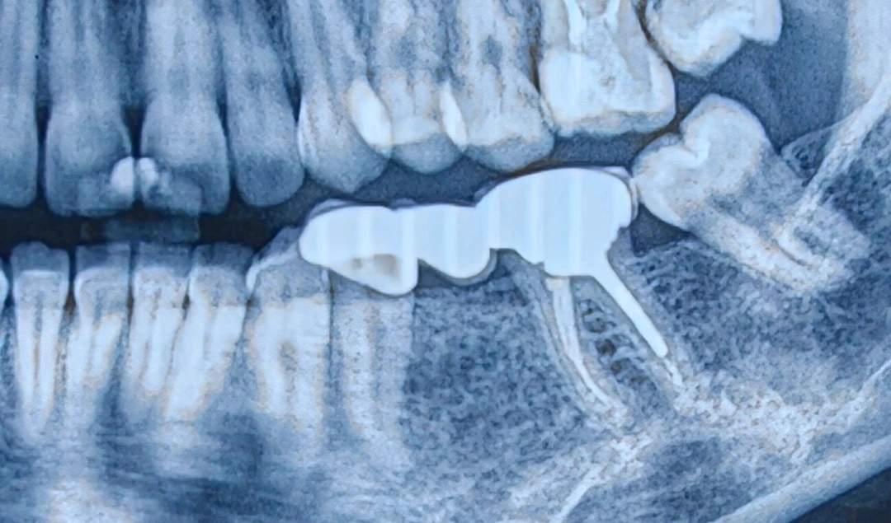

Chairside 34
آیا واقعاً میتوانیم شکایت اصلی بیمار را بهتر کنیم؟

بریج تازهتحویلگرفته شده از نظر آناتومی و زیبایی ضعیفه— سطح جونده صاف، پرسلن اوپک بیرونزده، حتی فلز نمایان است. اما بیمار از هیچکدام شکایت ندارد؛ حسش این است که سمت زبان حجیم است. کار این ویزیت این است که قبل از توربین، ببینیم آیا این شکایت اصلاً با تعویض بریج برطرف میشود یا نه.
بیمار با نارضایتی شدید از بریجی که به تازگی تحویل گرفته مراجعه کرده است. با وجود اینکه سطح اکلوزال پروتز به خاطر تراشهای مکرر کاملاً صاف شده، اوپک آن بیرون زده و حتی در نواحیای فلز مشخص است و زیبایی و آناتومی مناسبی ندارد، شکایت اصلی بیمار چیز دیگری است: احساس میکند پروتز بیش از حد داخل دهانش جا گرفته و سمت زبان برجسته است. چالش اصلی این ویزیت این است که قبل از دست به توربین شدن، ببینیم آیا شکایت سابجکتیو بیمار با یک درمان مجدد واقعاً برطرف میشود یا نه.
شرح مراجعه. بیمار با شکایت از اینکه «این بریج را تازه گذاشتهام، اصلاً راضی نیستم و خیلی توی دهانم حس میشود» مراجعه کرد. در نگاه اول، بریج از نظر تکنیکی و ظاهری بسیار ضعیف است؛ آناتومی جونده ندارد، سطح جونده به علت تراش زیاد اوپک نماست، در نواحیای فلز بیرون زده و حتی در جاهایی فلز دیده میشود. اما بیمار اصلاً از ظاهر، زیبایی، جویدن یا گیر غذایی شکایت ندارد، بلکه تمام تمرکزش روی احساس حجیم بودن سمت لینگوال است.
ارزیابی بالینی و تصمیمگیری.
- بررسی کانتور لینگوال: در معاینه دقیق داخل دهان، سطح لینگوال بریج برجستگی غیرعادی (Overcontouring) نسبت به سایر دندانهای قوس فکی ندارد و کانتور آن کاملاً در محدوده طبیعی است.
- بررسی رادیوگرافی: در نمای پانورامیک، ایراد تکنیکی فاحشی در نشست بریج دیده نمیشود، هرچند که برای قضاوت نهایی درباره پوسیدگی احتمالی یا لبههای پایه قدامی باید گرافی پریاپیکال بررسی شود.
- تطابق شکایت بیمار با توان درمان: زیبایی یک مسئله ذهنی و سابجکتیو است، اما کانتور و موقعیت دندان یک واقعیت بیومکانیکال عینی است. اگر مشکل بیمار گیر غذایی، بلندی بایت یا زیبایی بود، تعویض بریج صددرصد نتیجه را بهتر میکرد؛ اما وقتی کانتور لینگوال در حد نرمال است، ساخت یک بریج بینقص و زیبا باز هم نمیتواند فضای سمت زبان را از این خالیتر کند و حس بیمار بعد از درمان مجدد دقیقاً مثل قبل خواهد ماند.
طرح درمان و پاسخ به بیمار. شروع فوری تعویض پروتز رد شد.
به بیمار توضیح داده شد:
«بریج فعلی از نظر ظاهری زیبا نیست و آناتومی خوبی ندارد، اما این چیزی نیست که تو از آن ناراضی باشی. مسئله اینجاست که فرم سمت زبان این بریج کاملاً نرمال است و من اگر این کار را بردارم و زیباترین و ظریفترین بریج دنیا را هم برایت بسازم، باز هم نمیتوانم سمت زبان را از این کم حجم تر کنم. در نتیجه هزینهای میکنی، رفتوآمدی داری، اما در نهایت همان حس سنگینی قبل را خواهی داشت.»
در نهایت درمان متوقف نشد بلکه مشروط شد: به بیمار گفته شد ابتدا یک عکس پریاپیکال تهیه کند تا اگر پایهها مشکل بیولوژیک یا تکنیکی جدی (مثل عدم انطباق لبهها یا پوسیدگی) داشتند تصمیم درست گرفته شود، در غیر این صورت تعویض پروتز کمکی به رفع شکایت ذهنی او نخواهد کرد.
️Clinical Tip: در جلسات ویزیت، پیش از هر اقدامی باید بسنجیم که آیا واقعاً توانایی برطرف کردن «شکایت اصلی (Chief Complaint)» بیمار را داریم یا نه. اگر مشکلی که بیمار مطرح میکند با استانداردهای آناتومیک قابل تغییر نیست، عوض کردن یک پروتزِ نازیبا صرفاً شما را شریکِ یک نارضایتی حلنشده خواهد کرد.
محتوای این صفحه برای استفادهٔ آموزشی دندانپزشکان و دانشجویان دندانپزشکی تهیه شده است.